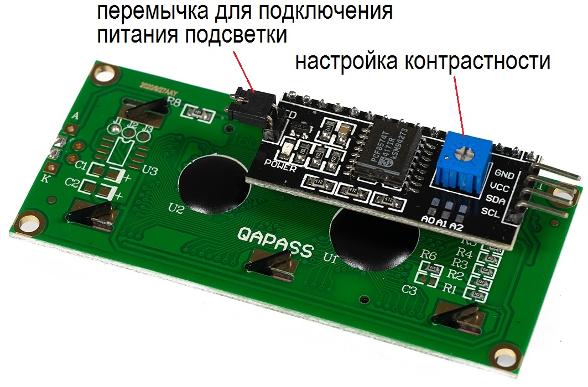
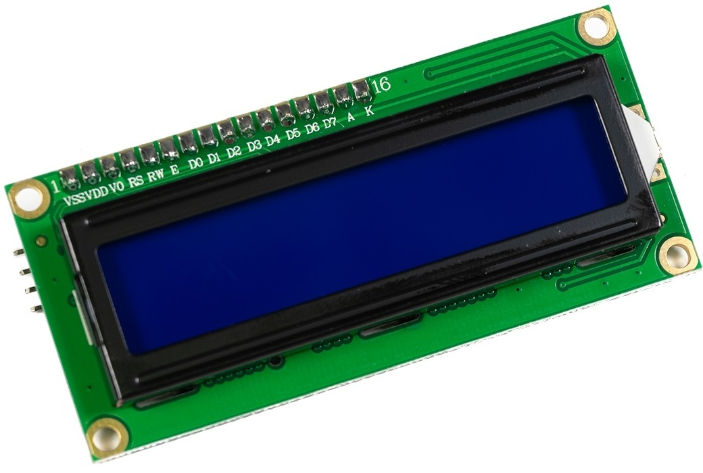
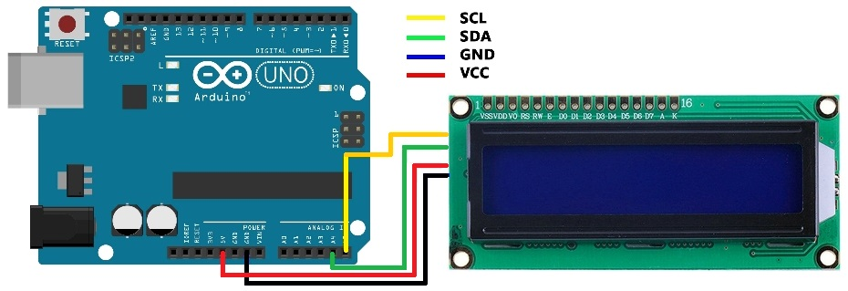
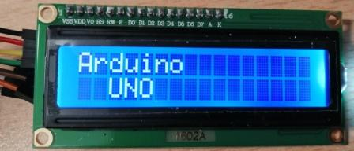

Подключение ЖК-дисплея 1602A I2C
к Arduino
Символьный дисплей LCD1602 I2C — жидкокристаллический дисплей (Liquid Crystal Display) экран которого способен отображать одновременно до 32 символов (16 столбцов, 02 строки, от чего и произошло название дисплея: LCD1602). Дисплей оснащён платой конвертером для преобразования параллельного 8-битного интерфейса дисплея в шину I2C по которой он и подключается к Arduino по адресу 0x3F или 0x27.


Дисплей построен на базе ЖК дисплея типа STN (Super Twisted Nematic) под управлением контроллера HD44780 и имеет синхронный параллельный 8-битный интерфейс подключённый к конвертеру для преобразования параллельного интерфейса дисплея в шину I2C по которой он и подключается к Arduino. Наличие конвертера облегчает подключение дисплея к Arduino, т.к. шина I2C использует всего 2 вывода для передачи данных и 2 вывода питания. Дисплей оснащён светодиодной подсветкой синего цвета. Контроллер HD44780 имеет ПЗУ в которой хранятся цифры, символы латиницы и некоторые иероглифы японского языка, для их отображения на дисплее. Отсутствующие символы, в т.ч. и символы кириллицы, можно загружать в память ОЗУ контроллера, для вывода на дисплей надписей на русском языке или нестандартных символов (например «смайликов»).
Основные характеристики
- Тип выводимой информации: символьный.
- Язык в ПЗУ дисплея: латиница, японский.
- Возможность загрузки собственных символов: есть.
- Формат выводимой информации: 16×2 символов.
- Тип дисплея: LCD.
- Технология дисплея: STN.
- Угол обзора: 180°.
- Цвет подсветки: синий.
- Цвет символов: белый.
- Контроллер: HD44780.
- Интерфейс: I2C.
- Адрес на шине I2C: 0×3F или 0×27 (зависит от конвертера).
- Напряжение питания 5 В.
- Рабочая температура: -20 ... +70°С.
- Температура хранения -30 ... +80°С.
- Габариты: 80×36 мм.
Подключение
Дисплей подключается к аппаратной шине I2C Arduino. Если Вы подключаете дисплей напрямую, то выводы GND и VCC дисплея подключаются к напряжению 5 В, а выводы SDA и SCL к аппаратной шине I2C. У Arduino UNO вывод SDA = A4, а вывод SCL = A5 (табл. 1).
Таблица 1
| Arduino Uno | LCD 1602A I2C |
|---|---|
| GND | GND |
| 5V | VCC |
| A4 | SDA |
| A5 | SCL |

Скетч №1
#include <LiquidCrystal_I2C.h> // подключаем библиотеку LiquidCrystal_I2C lcd(0x27, 16, 2); // адрес, столбцов, строк void setup() { lcd.begin(); // инициализация lcd.backlight(); // включить подсветку lcd.setCursor(0, 0); // столбец 0 строка 0 lcd.print("Arduino"); lcd.setCursor(2, 1); // столбец 0 строка 1 lcd.print("UNO"); } void loop() { }

Источники
lesson.iarduino.ru - Урок 4. Подключение LCD1602 по I2C к Ардуино